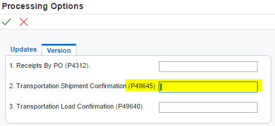

R47071 EDI (Receiving Advice Edit/Create - Purchasing) ends in error when it gets called by R47031 (EDI Shipping Notice Edit/Create) but the same report (R47071) does not issue any error when it gets submitted independently.
ERROR
Order Not at allowable status
Cause. . . . . The Purchase order is at a status that is not allowed to be received. Resolution . . Correct the status of the Purchase order or update the Allowable Status codes to be received in P4312 of the version you are calling.
The issue can be reproduced at will with the following steps (Use default version - or canned version):
(In running default version of R47031 (EDI Shipping Notice Edit/Create)) The version ZJDE0013 for P4312 (PO Receipts) is specified in the version ZJDE0001 for the application P49645 (Transportation Shipment Confirmation).
So the error '861S' is coming when none of below parameters for the processing option of P4312|ZJDE0013 (Receipt for Transportation) is '400 - Record Purchase Receipt'.
Tab 2-Status Default (defaulted values for canned versions)
(For this case study) The error '861S - Order Not at allowable status' is issued as below:
1. Read F4311.NXTR which is '400' on specific purchase order
2. Read associated processing options for P4312 in the sequence below,
2-1. Read the processing option item #"1. Receiving Advice Edit/Create (R47071)" of R47031 to get version of R47071, which is blank so default version R47071|XJDE0001 is to be read

: When a shipment with receipt routing is created from the EDI Shipping Notice Edit/Create (R47031) program, EDI Inbound Receiving Advice (R47071) calls the PO Receipts (P4312) version from the Transportation Shipment Confirmation (P49645) program, not the PO Receipts (P4312) version on the Version Tab of the EDI Inbound Receiving Advice (R47071).
2-2. Read parameter item #"2. Transportation Shipment Confirmation (P49645)" in R47071|XJDE0001, which is blank so P49645|ZJDE0001 is to be read
2-3. Read parameter item #"3. Purchase Order Receipts (P4312)" of P49645|ZJDE0001, which appears to be "ZJDE0013"
2-4. Read processing option value of P4312|ZJDE0013
#1. Acceptable Incoming Status Code 1
#2. Acceptable Incoming Status Code 2
#3. Acceptable Incoming Status Code 3
: For this case study, none of the above values is '400' for P4312|ZJDE0013.
Note:
To avoid error '861S',